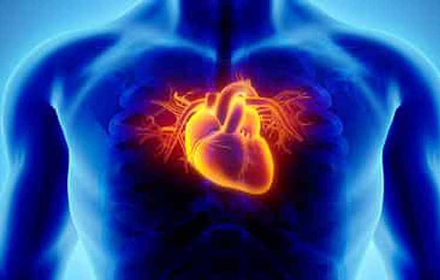

High Blood Pressure (HBP)
It's Causes, Symptoms, and Treatments
High Blood Pressure (HBP)
When a doctor talks about measuring a patient's blood pressure, the doctor simply wants to measure the force that the movement of blood exerts on the walls of the arteries as it flows through them. The arteries carries blood from the heart to other parts of the body. A person's blood pressure can be determined by the amount of blood his heart pumps and the amount of resistance to blood flow in your arteries. When a patient is diagnosed of High Blood Pressure, it simply means that the rate at which your heart pumps blood and the force of which these blood flows through the arteries is high. In other words, the patient will be

said to have Hypertension, which is a common name given to this condition. Blood pressure readings are measured using two different ways: the first is the systolic blood pressure, which measures the pressure in the arteries when the heart beats. The second is the diastolic blood pressure which measures the pressure in your arteries when your heart rests between beats. If systolic reads 120, and diastolic reads 80 then the reading will be said to be “120 over 80,” or written as, “120/80 mmHg.” When blood pressure measures above the normal readings, then a patient is said to be Hypertensive.
Causes of High Blood Pressure (HBP)
High Blood Pressure does not have specific cause that prompts it's occurence, but certain factors increases the chances of being diagnosed with this condition. The best way to know if you have high blood pressure is to regularly check your pressure with your consultant. Note: there are two types of High blood pressures (Primary and Secondary), and they have distinct causes or risk factors that are associated with them. The primary condition gradually develops over time, while the secondary condition develops suddenly.
- Age
- Hereditary
- Overactive or underactive thyroid
- Autoimmunity
- Obesity
- Pregnancy
- Birth control pills
- Congenital
- Chronic conditions
Risk Factors of Primary HBP
- Diet
- Lack of physical excercise
- Gender
- Stress
- Smoking
- Drugging
- Medications
- Sleeplessness
- Alchohol Consumption
Risk Factors of Secondary HBP
Complications of HBP
Having HBP is not a death sentence if it is well managed, but failure to manage it can bring great havoc to a person, and it can bring damage to a lot of other parts or organs of the body. It can cause severe damage and hurt to important organs like the heart, kidneys, eyes, and the brain.
- Heart attacks and Heart Disease
- Heart failure
- Kidney disease
- Dementia
- Memory lose
- Partial or complete stroke
- Metabolic syndrome
- Aneurysm
- Complete or partial loss of vision
Some Complications of HBP
Symptoms of High Blood Pressure (HBP)
Most people living with HBP have no early symptoms to indicate or notify them of the presence of
this condition, but at the stage where a patience is diagnosed to have a blood pressure reading
above the normal 120/80 mmHg, then some signs may begin to be noticable about them.
These
signs
may include- but not limited to -the following:
- Blurred vision
- Dizziness
- Vomiting
- Nosebleeding
- Palpitation
- Heavy breathing
- Fatigue
- Headache
Some Treatments and Preventions of HBP
"Prevention is better than cure", is a popular saying in hazard manageent. Yes, preventing danger or pain is way better and cheaper than managing, treating or curing any disease. It is not until it is too late before actions are taken to tame any disease. At the slightest symptom of such disease, one should start putting preventive measures in to place. Below are some actions to take in order to prevent High Blood Pressure.
- Regular blood pressure check
- Limit the intake of Sodium (Na)
- Eating healthy diets
- Managing stress
- Nutriments and Supplements
- Regular excercise
- Keep healthy weight
- Reduce or stop alchohol and/or smoking
- Cut down or reduce fatty foods
- Control your emotions, especially anger
- Be careful of the effects of some
Our Natural Nutriment Remedy
Do you know why High Blood Pressure is sometimes referred to as a silent killer? It is because the symptoms only begin to manifest when its at a chronic stage. But hey, no matter the stage the condition is, our proven Natural Nutriment and Supplement Therapy works like no other.
- This theraphy helps you get back your normal health by restoring normal pressure and preventing complications.
- It helps maintain and control the normal production of cholesterol and triglycerides for the body.
- It helps reduce exerting force of the blood on the arteries, prevents arteries from narrowing and improves normal blood flow to the body.
- It is not like other medications for controlling blood pressure, but it is a remedy that sustains a normal pressure.
- Unlike medicines that may sometimes cure one condition and bring another condition because of its composition, this theraphy does not contain chemicals but its made from natural ingredients such as; Salvia Miltiorrhiza, Ginkgo Biloba, Cinnamomum Camphora, etc.
The Best Natural Remedy Combination
Why Choose This Remedy Combination?
The above products combination have the prestigious Kosher Seal (which makes them acceptable even to the Jews). The Jews don’t take anything that isn’t 100% natural. As a fact, they don’t take bread with yeast! They believe in no
additives. It also have other seals which include: International Aloe Science Council seal, Halal (an Islamic medical) seals, and NAFDAC (Nigerian Food and Drug Council), these seals of highest form of purity.
Placing an order for HBP Solution Pack?
Kindly fill out the form below to place your order

If your country is not on the list above, kindly contact us to let us know how we can get the product to you.